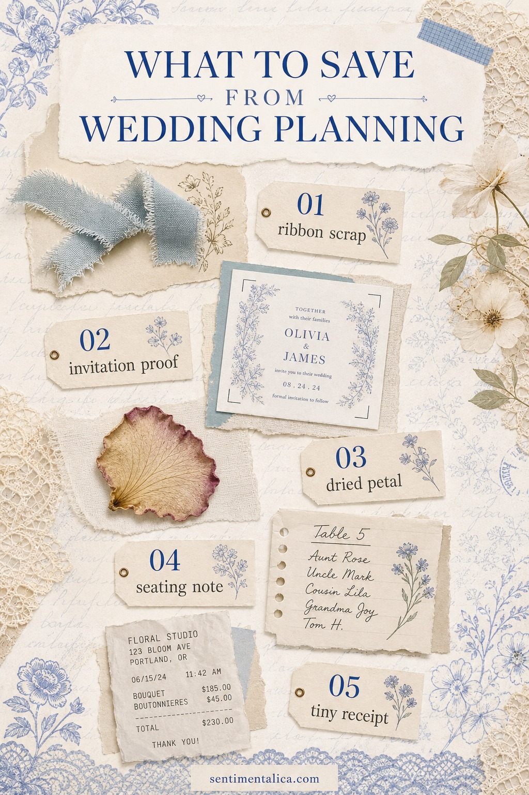
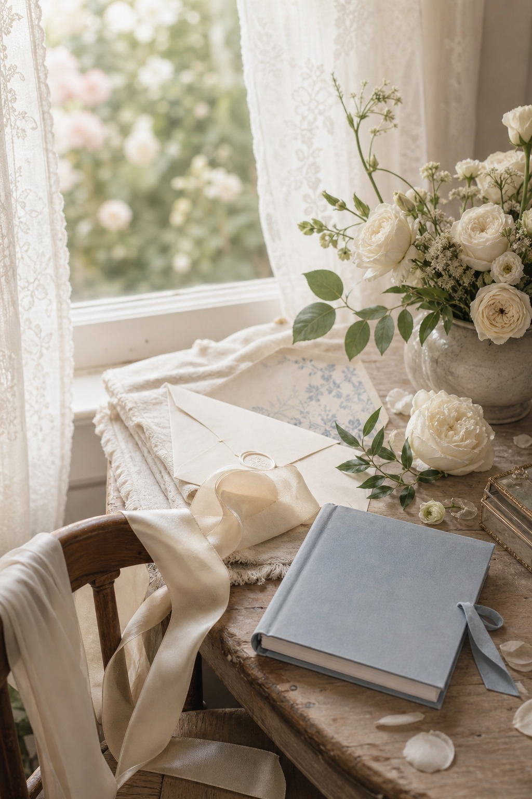

Wedding planning creates a surprising amount of tiny paper emotion: a ribbon you almost threw away, an envelope liner, a flower receipt, a draft invitation, a table note with someone’s handwriting on it. None of it feels important until the day is over. Then suddenly the scraps become the part that still feels alive.

Save the pieces with texture
Start with the things that would be hard to recreate later. A ribbon scrap, a dried petal, a seating note, a tiny receipt, or the first invitation proof carries more feeling than a perfect posed photo. You do not need everything. You need the small pieces that make the season feel real.

Make one quiet envelope
Before you decide on a page, tuck the pieces into one envelope. Write the date range on the outside, not a dramatic title. Something like “planning weeks” is enough. Later, when you build the spread, you can choose the three scraps that still make your chest soften.
Build around one color
If the keepsakes are ivory and pale blue, let the whole page stay in that mood. If the flower receipt has a rose edge, repeat that dusty pink once in a label or bow. A wedding journal page feels more grown-up when it has restraint: cream paper, one blue note, one petal, one soft shadow.
When the page is ready, use the matching printable pages at the end only as a quiet base. The real story is still your ribbon, your receipt, your tiny note, and the part of the day you almost forgot to keep.